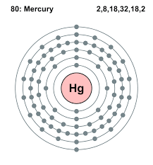

Element Name and Symbol
Element: Mercury
Symbol: Hg
🌿
Atomic Structure (Bohr Model)
Below is the Bohr Model of the element:

Key Properties and Uses
- Used in Medical instuments like Thermometers
- Used as a catalyst for certain chemical manufacturing processes, like the production of Chlorine (Cl)
- Mercury is used in some fluorescent and other types of lamps, including streetlights.
Fun or Interesting Facts
- Mercury is the only metal that is liquid at room temperature
- Its chemical symbol, Hg, comes from the Latinized Greek name hydrargyrum, meaning "water-silver".
- The phrase "mad as a hatter" originated from mercury poisoning experienced by hat makers who used mercury in the felting process.
Group Members
Bagunu, Luna Grace C.
Buguina, Ma. Theresa C.
Gonzales, Patricia Ellaine B.
Lavarez, Caleb Amram M.
Morales, Aideen Shanessa B.
References
&docid=R7dtcxjqnUSuaM&tbnid=quaLcUHqsZbQ6M&vet=12ahUKEwj16Nbojp-RAxWgcfUHHUY1DaYQM3oECBgQAA..i&w=800&h=860&hcb=2&ved=2ahUKEwj16Nbojp-RAxWgcfUHHUY1DaYQM3oECBgQAA){kind=link}